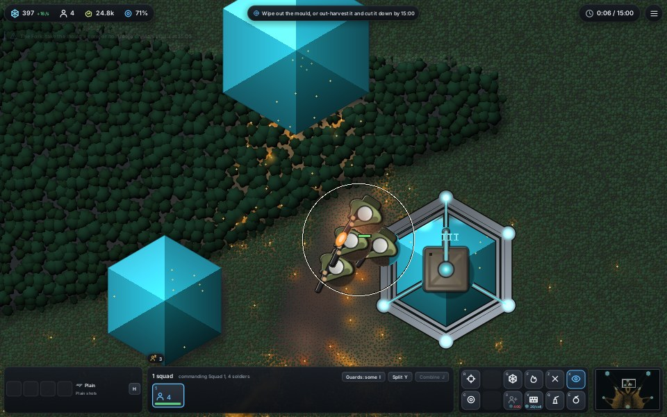
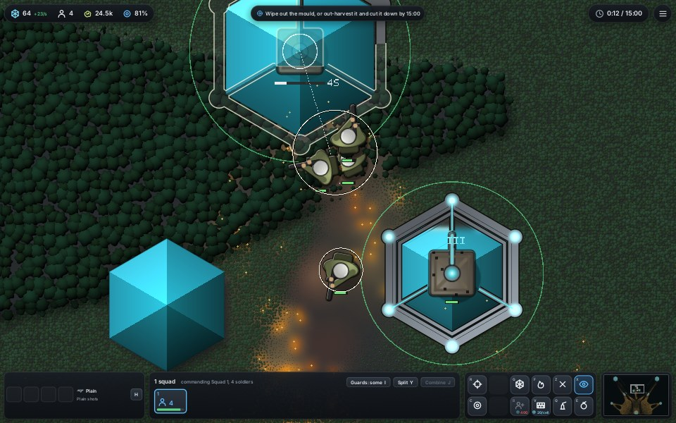
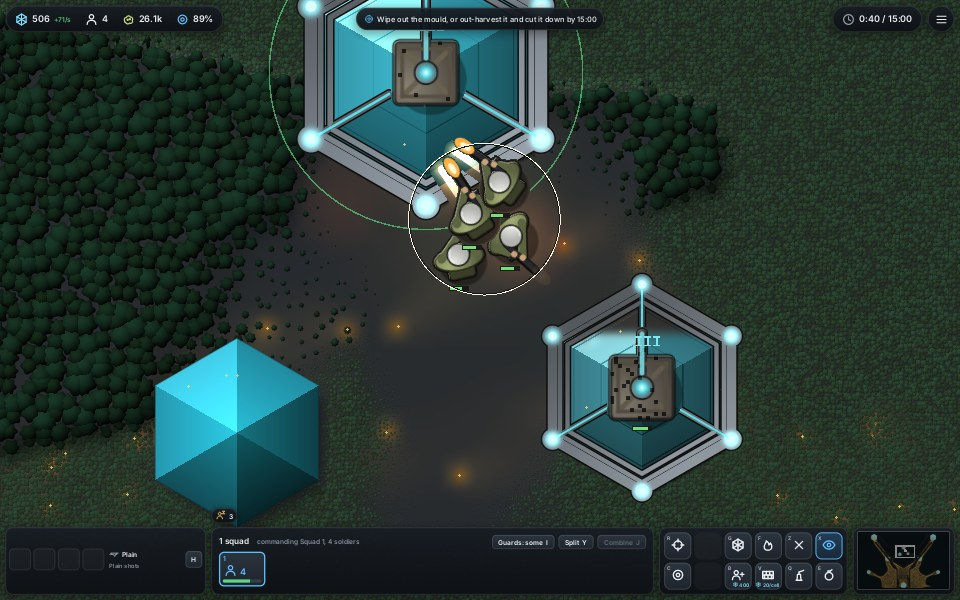

<title>Pump Economy</title>
<meta name="claude:viewport-fit-sides" content="cover">
<link rel="stylesheet" href="https://fonts.googleapis.com/css2?family=Inter:wght@400;600&family=Space+Grotesk:wght@500;700&display=swap">
<style>
/* Layout: one reading column; the clip first, then stills with their counts, then the numbers. */
:root{--bg:#f3f5f6;--fg:#1a2228;--muted:#5a6872;--line:#d5dde2;--accent:#127c86;--panel:#ffffff;
--display:"Space Grotesk",system-ui,sans-serif;--body:"Inter",system-ui,sans-serif}
@media (prefers-color-scheme:dark){:root:not([data-theme="light"]){--bg:#11171b;--fg:#e4ebef;--muted:#93a3ad;--line:#2a353c;--accent:#5cd6e0;--panel:#182127;color-scheme:dark}}
:root[data-theme="dark"]{--bg:#11171b;--fg:#e4ebef;--muted:#93a3ad;--line:#2a353c;--accent:#5cd6e0;--panel:#182127;color-scheme:dark}
body{background:var(--bg);color:var(--fg);font:15px/1.6 var(--body);padding-left:max(16px,env(safe-area-inset-left,0px));padding-right:max(16px,env(safe-area-inset-right,0px));padding-block:32px 48px}
main{max-width:980px;margin:0 auto;display:grid;gap:28px}
h1,h2{font-family:var(--display);text-wrap:balance;margin:0}
h1{font-size:2rem}h2{font-size:1.25rem}
p{margin:0;max-width:68ch}
.lede{color:var(--muted)}
video,img{width:100%;border-radius:6px;border:1px solid var(--line);display:block}
figure{margin:0;display:grid;gap:8px;min-width:0}
figcaption{font-size:.88rem;color:var(--muted)}
.stills{display:grid;grid-template-columns:repeat(auto-fit,minmax(260px,1fr));gap:16px}
.wrap{overflow-x:auto}
table{border-collapse:collapse;width:100%;font-variant-numeric:tabular-nums;font-size:.92rem}
th,td{text-align:left;padding:6px 10px;border-bottom:1px solid var(--line)}
th{font-weight:600;color:var(--muted)}
td.n{text-align:right}
ul{margin:0;padding-left:1.2em;display:grid;gap:6px;max-width:72ch}
b{color:var(--accent)}
</style>
<main>
<header style="display:grid;gap:10px">
<h1>Pumps as the main economy</h1>
<p class="lede">Fork map, seed 1, squad mode, rendered on the cloud's software GPU. The squad never drains by hand here: it clicks a pump onto each crystal's rim (it snaps to the middle), raises it together, and upgrades it to level 3 before moving on.</p>
</header>

<figure>
<video src="pumps-fork.mp4" controls muted loop playsinline autoplay></video>
<figcaption>0:01 to 0:40 at 4 frames a game second. Top left: bank and income per second (income only, never negative). The rig is laid corner by corner as it is built; the struts and lamps glow by what the pump drew that frame; the crystal inside dims as it is pumped.</figcaption>
</figure>

<section class="stills">
<figure><figcaption><b>0:06</b>: one pump, level 3, on an 885-food crystal. Bank 397, income +16/s.</figcaption></figure>
<figure><figcaption><b>0:12</b>: second pump half laid (cream plan for the rest), 4 s left. Bank 64, income +23/s.</figcaption></figure>
<figure><figcaption><b>0:40</b>: two level-3 pumps, the crystals dimmed. Bank 506, income +71/s, 1,416 food pumped.</figcaption></figure>
</section>

<section style="display:grid;gap:12px">
<h2>The owner's greedy opening, before and after</h2>
<p>Every soldier drains the biggest crystal, and a soldier is bought whenever the bank can pay (Fork seed 1, squad mode, one seed: a smoke check, not a census).</p>
<div class="wrap"><table>
<thead><tr><th>Game time</th><th class="n">Soldiers, before</th><th class="n">Soldiers, now</th><th class="n">Food in, before</th><th class="n">Food in, now</th></tr></thead>
<tbody>
<tr><td>0:15</td><td class="n">12</td><td class="n">9</td><td class="n">1,838</td><td class="n">320</td></tr>
<tr><td>0:30</td><td class="n">27</td><td class="n">11</td><td class="n">7,611</td><td class="n">1,104</td></tr>
<tr><td>1:00</td><td class="n">33</td><td class="n">15</td><td class="n">9,979</td><td class="n">2,704</td></tr>
<tr><td>1:30</td><td class="n">40</td><td class="n">22</td><td class="n">15,777</td><td class="n">5,364</td></tr>
</tbody></table></div>
</section>

<section style="display:grid;gap:12px">
<h2>What a pump pays on the Fork</h2>
<div class="wrap"><table>
<thead><tr><th>Crystal</th><th class="n">Food in it</th><th class="n">Level 1</th><th class="n">Level 2</th><th class="n">Level 3</th></tr></thead>
<tbody>
<tr><td>Small (4 of them)</td><td class="n">885–1,131</td><td class="n">5.9–7.5/s</td><td class="n">11–14/s</td><td class="n">21–26/s</td></tr>
<tr><td>Middle</td><td class="n">1,876</td><td class="n">12.5/s</td><td class="n">23/s</td><td class="n">44/s</td></tr>
<tr><td>Big (2 of them)</td><td class="n">7,768</td><td class="n">52/s</td><td class="n">97/s</td><td class="n">182/s</td></tr>
</tbody></table></div>
<p class="lede">A pump costs 500; upgrades 400, then 800, straight from the bank. Each level draws 1.5x as fast and banks 1.25x the food per charge, so a level-3 pump gets 1.56x the crystal in all. Hand draining is a fifth of what it was (6 food a second a soldier). Guarding is unchanged.</p>
</section>
</main>
